Годините · хрониката на мандата2015 — Титлата е потвърдена. Фонтаните запяха.
Брюксел утвърди титлата през май. На 22 май емблемата на града отново запя.
Трите акцента на годината · подбрани на ръка
Емблемата мълча трийсет години. Дронът излетя, градът дойде — 315 кадъра само от тази вечер. Галерията — долу в хрониката.
подробностите — на мястото им →„Първи думи на българска земя“ — ЕСК 2019 е официално.
подробностите — на мястото им →Мечтата от 1975, довършена: 6000 души, пряко по БНТ, Йовчев на халките.
подробностите — на мястото им →Хрониката на годината
месец по месец · 41 записа: 12 албума · 1 документна карта · 19 събития от вестника и 8 брояЗалата, проектът „цитаделата“, подкрепата на трима души — и решението: първо археология. Вечерта, която спаси тепето.
Към пълната тема →Реставрираният оригинал на Арнолдо Дзоки се прибира у дома в Цар-Симеоновата градина.
Към пълната тема →„Антични съкровища от Брестовица“ в Археологическия: 80 находки, единственият шлем от този тип на Балканите.
Към пълната тема →Емблемата запя след трийсет години мълчание. Дронът, тълпата, водата — албумът на една вечер.
Към пълната тема →„Първи думи на българска земя.“ Делегацията, залата, подписите — денят, в който титлата стана официална.
само тук — в хрониката на годината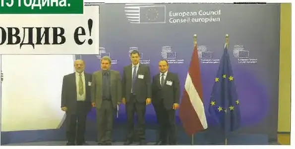
стр. 1По време на срещата на Съвета на министрите на ЕС в Брюксел на 19.05.2015 г. беше официално гласуван статутът на Пловдив и италианския град Матера като Европейски столици на културата през 2019 година. На срещата присъстваха кметът Иван Тотев, зам.-кметът Стефан Стоянов и изпълнителният директор на фондация „Пловдив 2019“ Валери Кьорленски.
брой 40 · август 2018 · стр. 1 — отвори страницата →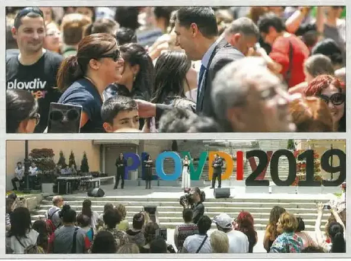
стр. 32019 балона полетяха в небето на Пловдив, пуснати от площад „Стефан Стамболов“, където хиляди пловдивчани и гости на града ЗАЕДНО отпразнуваха официалното утвърждаване от Съвета на министрите на Пловдив за Европейска столица на културата през 2019 г. „Горд съм да бъда кмет точно в този мандат, когато Пловдив изгрява като ярка звезда на културната карта на Европа“, заяви кметът Иван Тотев пред множеството.
брой 40 · август 2018 · стр. 3 — отвори страницата →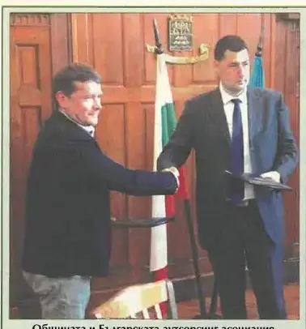
стр. 3Община Пловдив и Българската аутсорсинг асоциация подписаха меморандум, който отваря нова фаза в контакта между бизнеса и общината. Целта е съвместен пакет от мерки за представяне на възможностите на града пред нови инвеститори – в сектор, разкрил 5000 работни места за три години.
брой 1 · стр. 3 — отвори страницата →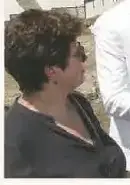
стр. 2След близо 30 години прекъсване проучването на Епископската базилика на Филипопол бе възстановено с разкриване, картографиране и стабилизиране на мозайките под ръководството на реставратора доц. Елена Кантарева-Дечева. Обектът се реализира в партньорство между Община Пловдив и Фондация „Америка за България“ и е сред водещите проекти в подготовката за Европейска столица на културата 2019.
Марица ГРАДЪТ · февруари 2017 · стр. 2 · и в Марица ГРАДЪТ · февруари 2017 — отвори страницата →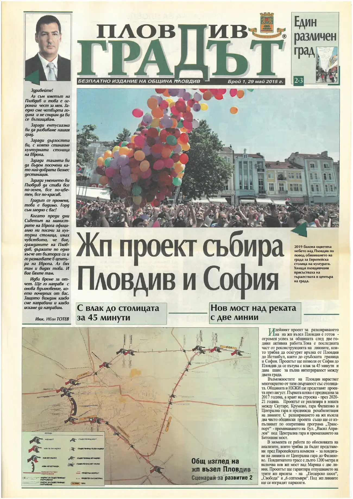
8 стр. · четиС влак до столицата за 45 минути · Нов мост над реката с две линии · Един различен град
кликни — броят се отваря в четеца · всички броеве са в секция „Вестникът“ →Проектът на НКЖИ тръгва — Пловдив става възел. Присъствахме и помагахме; проектът е техен.
само тук — в хрониката на годината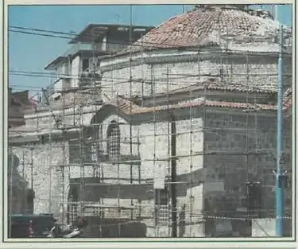
стр. 8Кметът Иван Тотев даде старт на дългоочаквания ремонт на покрива на Баня „Старинна“, обновяван за последно през 1999 г. Изпълнителят подменя керемидите с оригиналите след обработка и изолация на подпокривното пространство. Банята става все по-интригуващ център за съвременно изкуство.
брой 4 · стр. 8 · и в брой 3 — отвори страницата →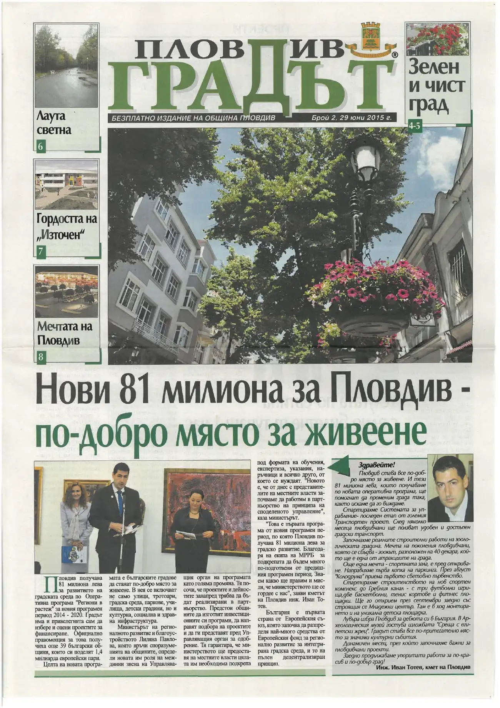
8 стр. · четиЗелен и чист град · Лаута светна · Гордостта на „Източен“
кликни — броят се отваря в четеца · всички броеве са в секция „Вестникът“ →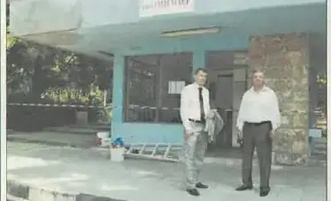
стр. 2Заместник-кметът Петър Зехтински и кметът на район „Централен“ Георги Титюков дадоха официален старт на ремонтните дейности на гара „Пионер“ на Младежкия хълм. Гарата ще бъде боядисана отвътре и отвън, ще се направи изолация на покрива, ще се изгради рампа и ще се обнови детската площадка, докато детската железница продължава да функционира.
брой 3 · стр. 2 · и в брой 4 — отвори страницата →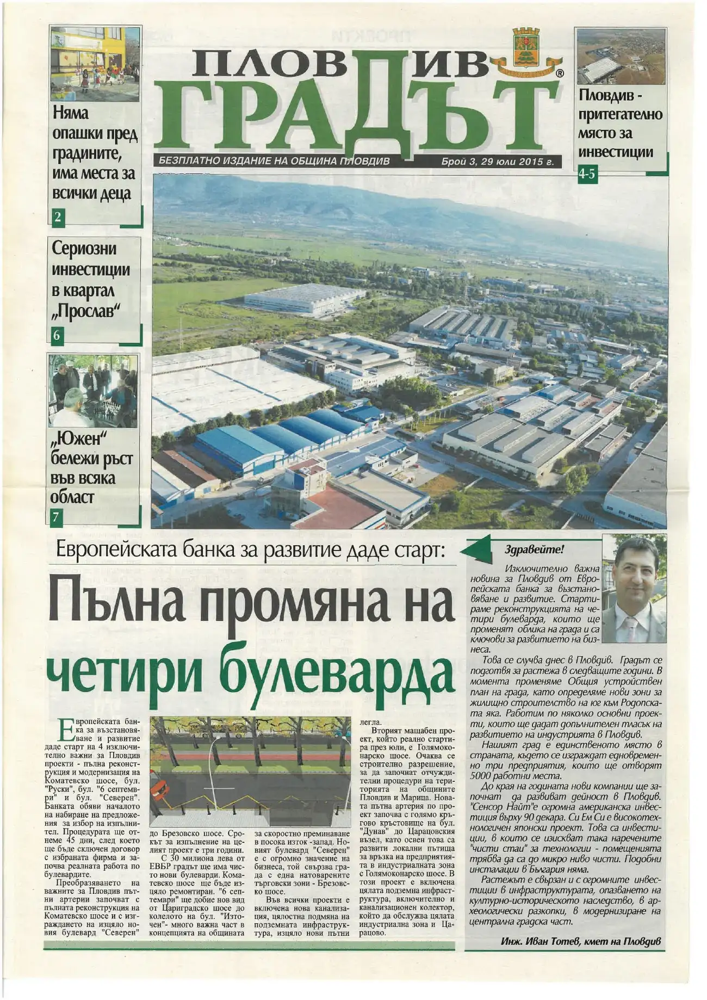
8 стр. · четиЕвропейската банка за развитие даде старт · Няма опашки пред градините, има места за всички деца · Сериозни инвестиции в квартал „Прослав“
кликни — броят се отваря в четеца · всички броеве са в секция „Вестникът“ →Светът гребе в Пловдив: първенството за юноши и младежи. Началото на голямата спортна поредица.
Към пълната тема →Шест хиляди души, пряко по БНТ, Йовчев на халките. Мечтата от 1975 — довършена.
Към пълната тема →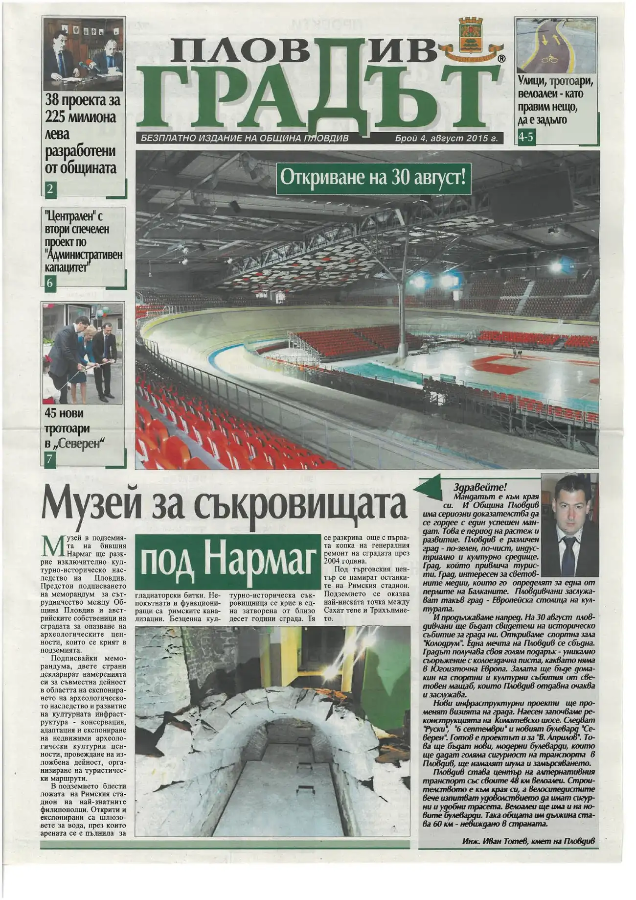
8 стр. · четиОткриване на 30 август! · 38 проекта за 225 милиона лева разработени от общината · „Централен“ с втори спечелен проект по „Административен капацитет“
кликни — броят се отваря в четеца · всички броеве са в секция „Вестникът“ →Делегацията, срещите, разменените подаръци. Събитие, което не е тема в никой разказ — и точно затова е тук.
само тук — в хрониката на годината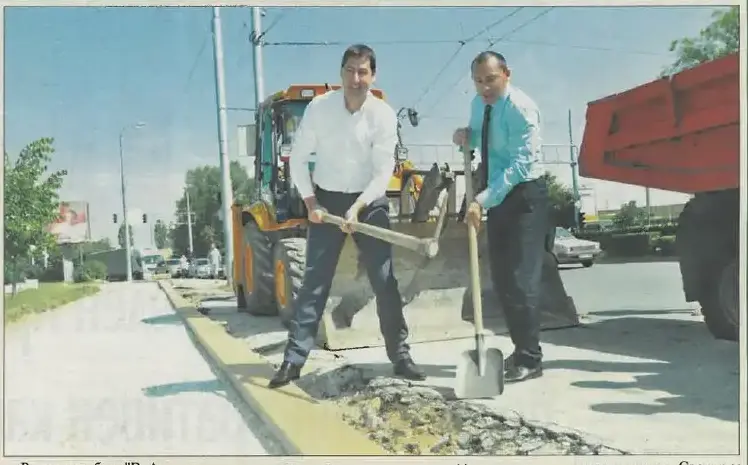
стр. 5Кметът Иван Тотев и районният кмет на „Северен“ Ральо Ралев направиха първата копка на ремонта на бул. „В. Априлов“ в отсечката от бул. „Дунав“ до бул. „България“. Проектът включва преасфалтиране на двете платна, подмяна на осветлението и нови тротоарни настилки. Отсечката е около 400 метра, а срокът за изпълнение – един месец.
брой 4 · стр. 5 · и в брой 7 — отвори страницата →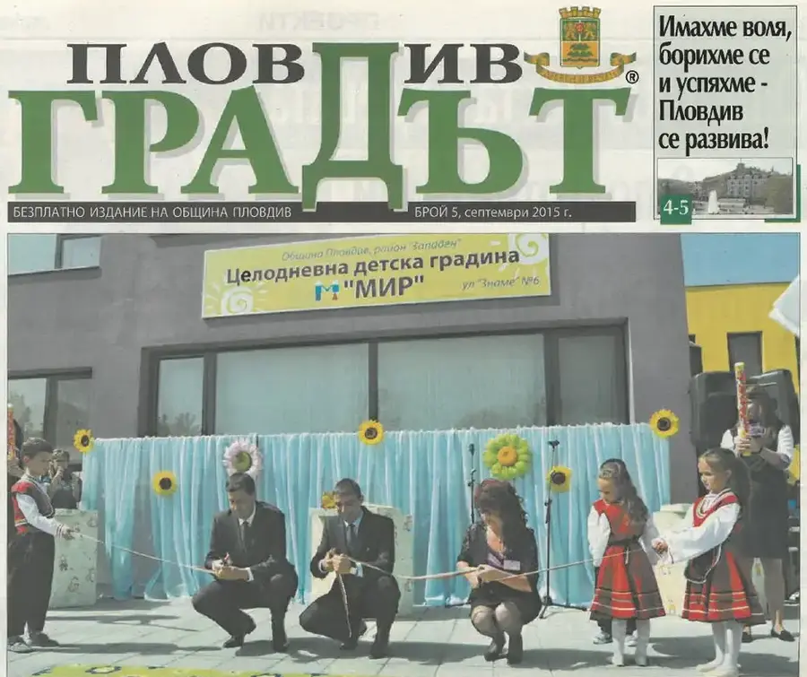
стр. 1Детска градина „Мир“ на ул. „Знаме“ в район „Западен“ беше открита от кмета Иван Тотев и районния кмет Димитър Колев. Новата сграда е с разгърната площ от 2260 кв. м, осем групи за 200 деца, плувен басейн и нов паркинг, а само преди година на мястото имаше гола поляна.
брой 5 · стр. 1 — отвори страницата →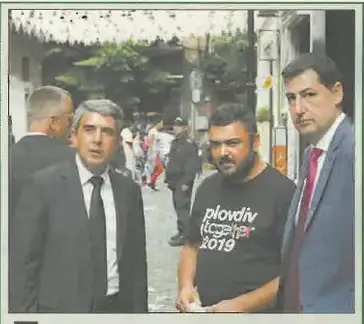
стр. 3Президентът Росен Плевнелиев откри Втората национална аутсорсинг конференция в Пловдив с участието на представители на повече от 100 компании и заяви, че Пловдив се превърна в индустриален център на България. Преди форума държавният глава направи неофициална разходка из арт квартала „Капана“ и остана впечатлен от обновената градска зона.
брой 5 · стр. 3 — отвори страницата →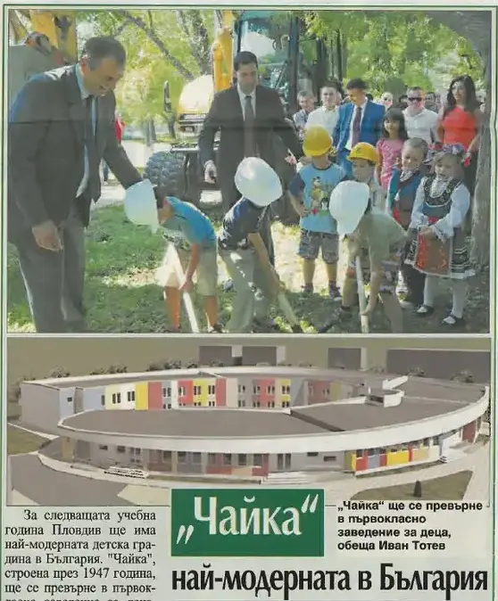
стр. 2Кметът Иван Тотев и районният кмет на „Източен“ Николай Чунчуков направиха първата копка на изцяло новата сграда на детска градина „Чайка“. На мястото на старата сграда от 1947 г. ще бъде издигната уникална за страната градина с осем групи, плувни басейни, физкултурни салони и соларни системи.
брой 5 · стр. 2 — отвори страницата →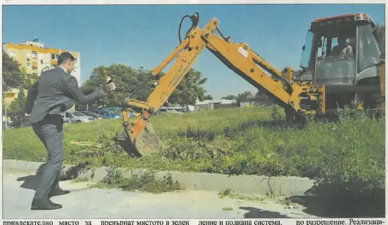
стр. 8Кметът Иван Тотев даде старт на строителните дейности за нов модерен парк върху 6,5 декара пустеещо пространство в края на ул. „Богомил“. Паркът е проектиран още през 2008-2009 г., а реализацията става възможна благодарение на усвояването на европейски средства по ОП „Зелена градска среда“.
брой 5 · стр. 8 · и в брой 8 — отвори страницата →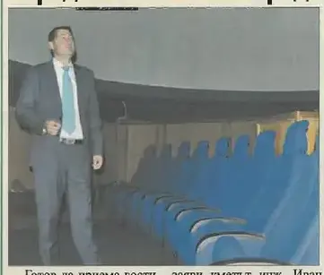
стр. 8Първият в България 3D планетариум в Природонаучния музей е готов да приема посетители, съобщи кметът Иван Тотев. Уникалното съоръжение е с диаметър 8 метра и без аналог в страната, а програмата включва пет филма, които ще бъдат дублирани на български език.
брой 5 · стр. 8 — отвори страницата →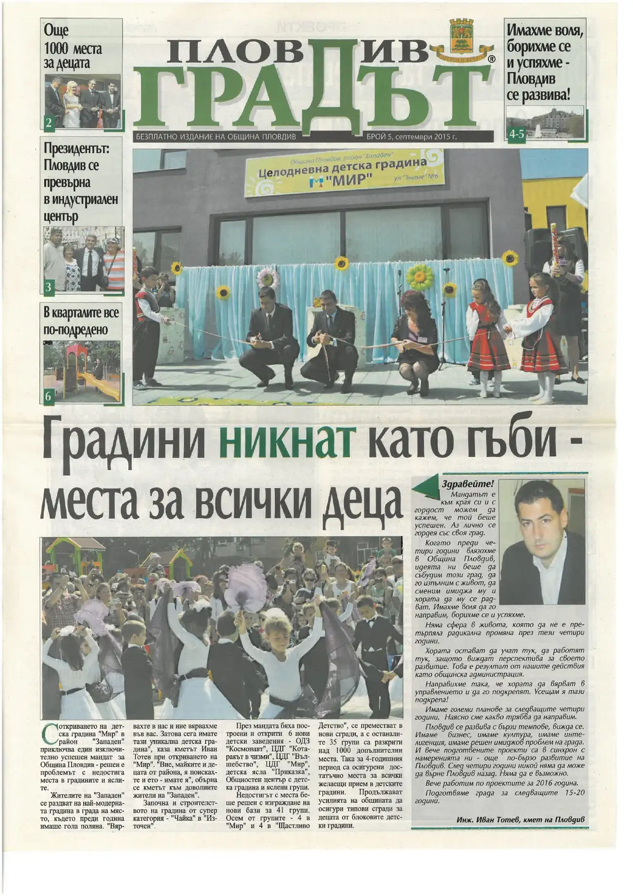
8 стр. · четиОще 1000 места за децата · Президентът: Пловдив се превърна в индустриален център · В кварталите все по-подредено
кликни — броят се отваря в четеца · всички броеве са в секция „Вестникът“ →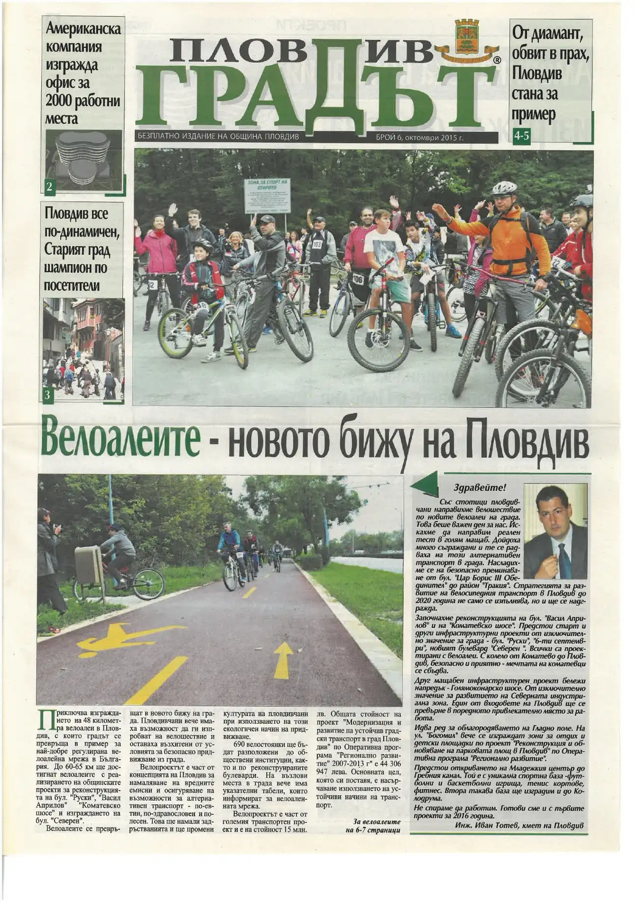
8 стр. · четиАмериканска компания изгражда офис за 2000 работни места · Пловдив все по-динамичен, Старият град шампион по посетители · От диамант, обвит в прах, Пловдив стана за пример
кликни — броят се отваря в четеца · всички броеве са в секция „Вестникът“ →С министъра на спорта. Три години по-късно същата сграда носи Знака на Съвета на Европа.
Към пълната тема →Новият Общински съвет, новите шестима районни кметове — за пръв път пряко избрани.
само тук — в хрониката на годинатаРавносметката на първите четири години — както е представена тогава. Не преразказваме: показваме документа.
PDF · заготовка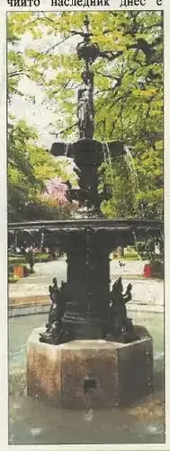
стр. 5Комисия от Министерството на регионалното развитие и благоустройството отчете извършените дейности по възстановяването на Цар-Симеоновата градина и бе подписан протокол за Акт 16. Община Пловдив върна автентичния вид на градината от 1936 г., включително Централния павилион и фонтана на Деметра, с автоматична поливна система и ново осветление.
брой 8 · стр. 5 — отвори страницата →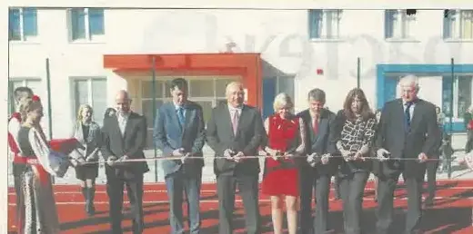
стр. 6Кметът Иван Тотев, министърът на младежта и спорта Красен Кралев и посланикът на Кралство Норвегия Гюру Катарина Викьор прерязаха лентата на новия Младежки център със спортен комплекс. Комплексът се простира върху осем декара и включва футболни и баскетболни игрища, тенис кортове, фитнес площадки и триетажна сграда със зали за обучение. Министър Кралев определи центъра като уникален за България.
брой 7 · стр. 6 — отвори страницата →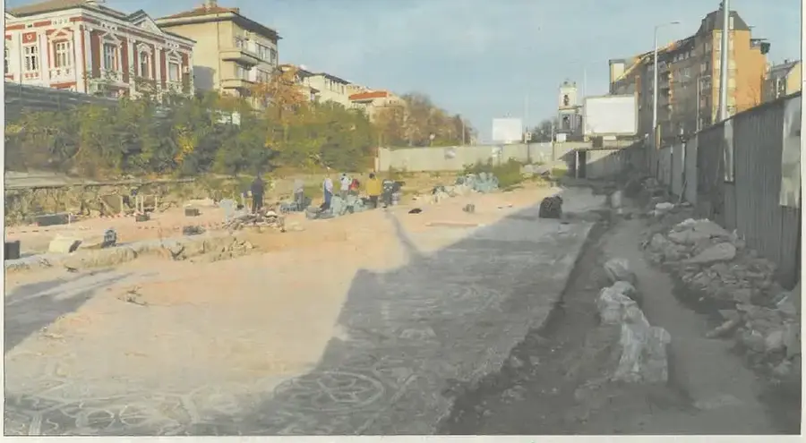
стр. 1На откриването на VII-ата Международна среща за туризъм кметът Иван Тотев обяви, че Пловдив кандидатства с Голямата раннохристиянска базилика за списъка на световното наследство на ЮНЕСКО. Разкриването на целия обект с уникалните мозайки ще се реализира в партньорство с фондация „Америка за България“ и Регионалния археологически музей.
брой 7 · стр. 1 — отвори страницата →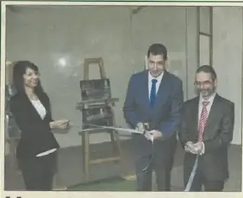
стр. 8Кметът Иван Тотев откри планетариума, аквариумите и терариумите в обновения Природонаучен музей – най-модерния в България. Само в дните на отворените врати 3D планетариумът бе посетен от над 5000 души, а сред атракциите са 10-годишен нилски крокодил и звездни костенурки. Сладководният аквариум разполага с 216 вида.
брой 7 · стр. 8 · и в Марица ГРАДЪТ · февруари 2017 — отвори страницата →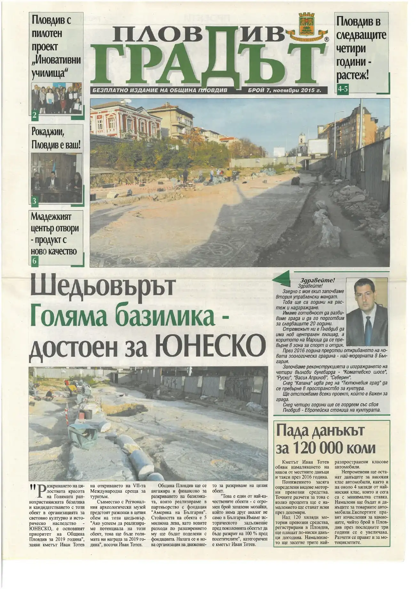
8 стр. · четиПловдив с пилотен проект „Иновативни училища“ · Рокаджии, Пловдив е ваш! · Младежкият център отвори – продукт с ново качество
кликни — броят се отваря в четеца · всички броеве са в секция „Вестникът“ →Елхата, светлините, базарът пред общината. Кадрите, с които годината си отива.
само тук — в хрониката на годината„Местно време“, БНТ — истински запис от архива. Равносметката на 2015, казана на глас.
видео · 0:22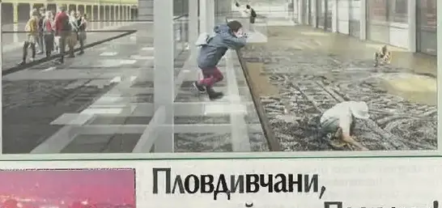
стр. 8В средата на декември кметът Иван Тотев, експертите по обекта и Фондация "Америка за България" обявиха историческото решение да бъде разкрита цялата Епископска базилика на Филипопол. Разширяването на обекта дава възможност да се реализира красив площад пред Католическата катедрала, а всички дейности по проекта трябва да завършат през есента на 2018 г.
брой 9 · януари 2016 · стр. 8 — отвори страницата →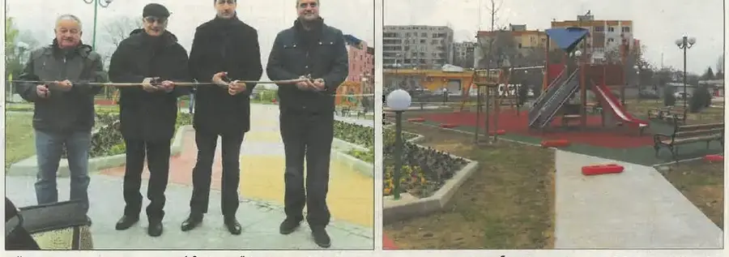
стр. 4Кметът Иван Тотев откри новия парк на ул. „Богомил“ в район „Източен“, изграден върху близо 7 декара пустеещо пространство. Паркът е с модерни детски съоръжения, поливна система, парково осветление и 100 новозасадени дървета, а проектът е реализиран с европейско финансиране заедно с Цар-Симеоновата градина.
брой 8 · стр. 4 — отвори страницата →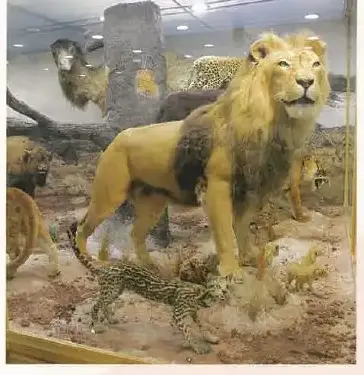
стр. 7Природонаучният музей отвори врати в края на 2015 г. след мащабен ремонт, реализиран с помощта на Община Пловдив. Само за година в залите влязоха близо 39 000 посетители, привлечени от обновената експозиция, ултрамодерния планетариум и уникалната колекция, сред която гигантска анаконда, крокодили и над 200 вида птици.
Марица ГРАДЪТ · февруари 2017 · стр. 7 — отвори страницата →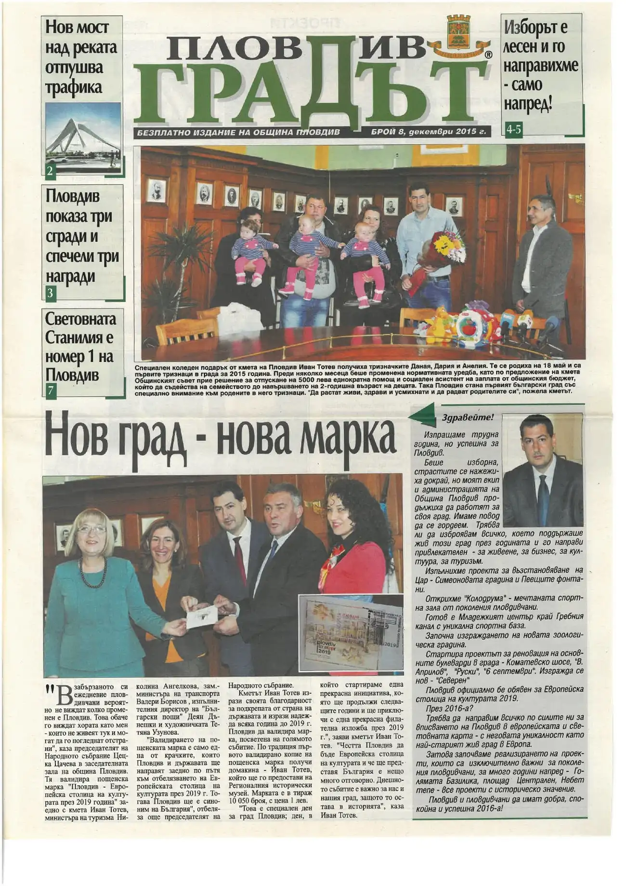
8 стр. · четиНов мост над реката отпушва трафика · Пловдив показа три сгради и спечели три награди · Световната Станилия е номер 1 на Пловдив
кликни — броят се отваря в четеца · всички броеве са в секция „Вестникът“ →